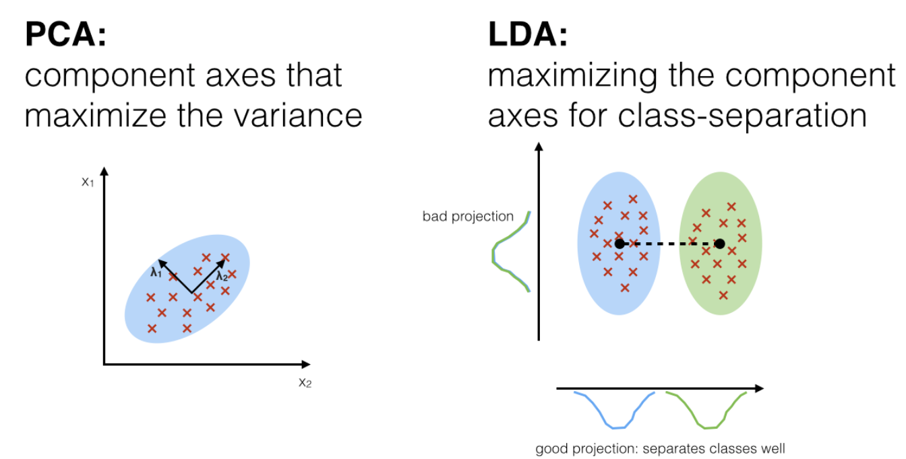
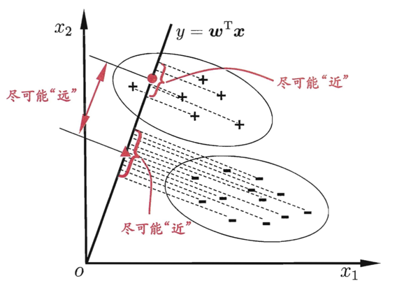
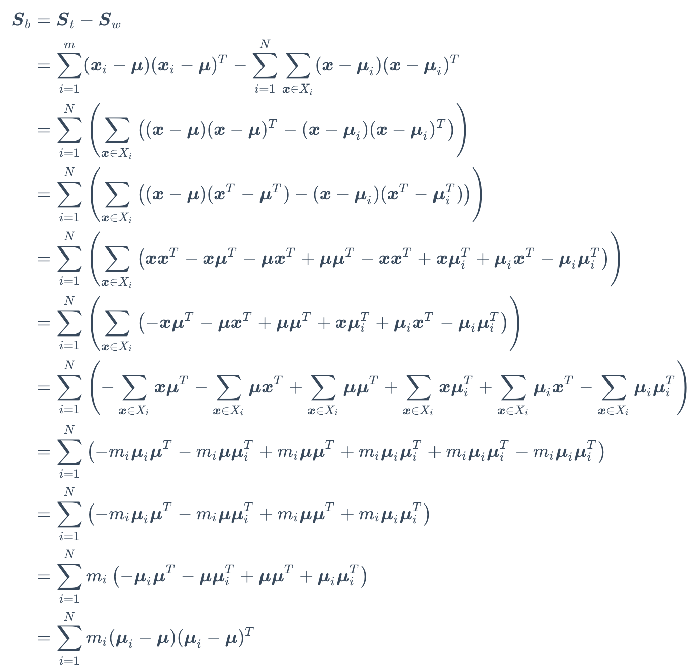
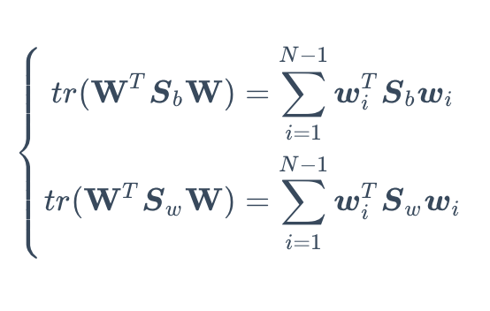
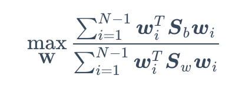
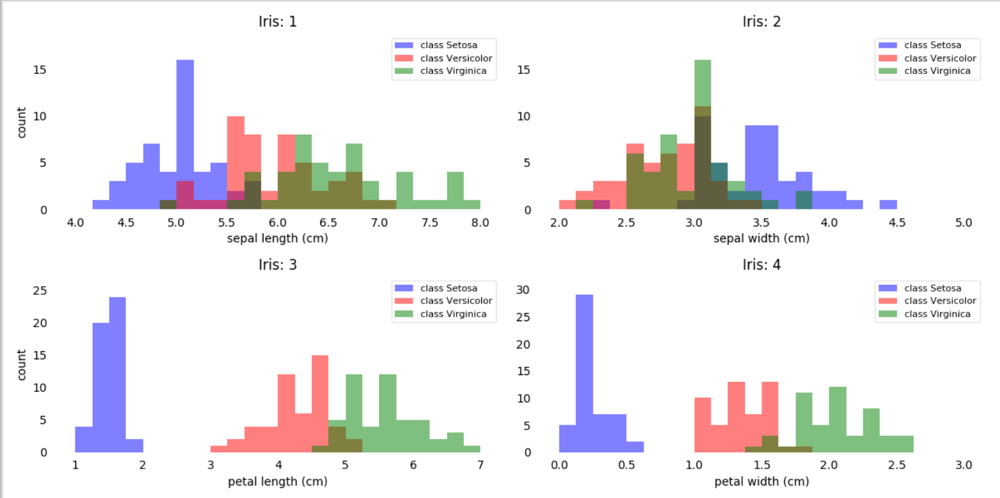
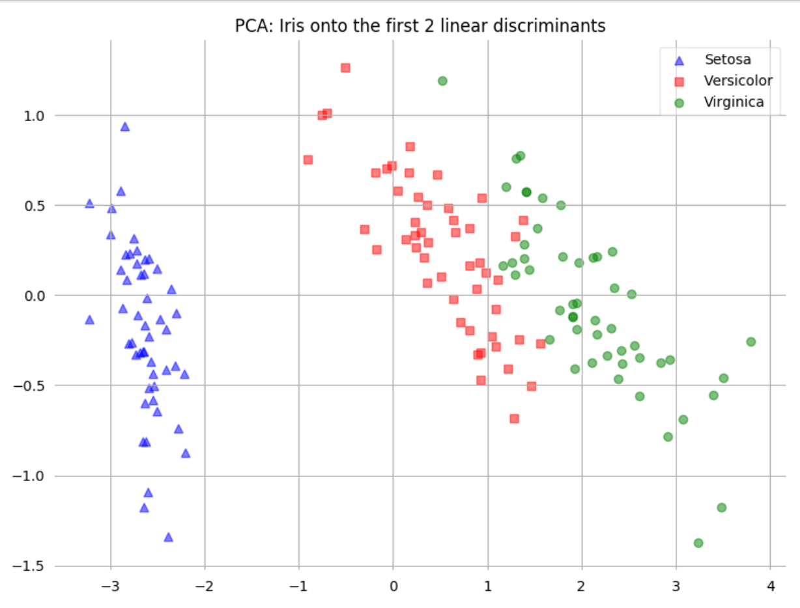
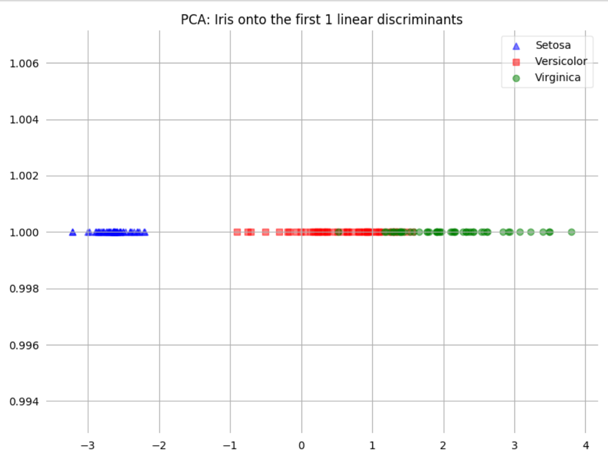
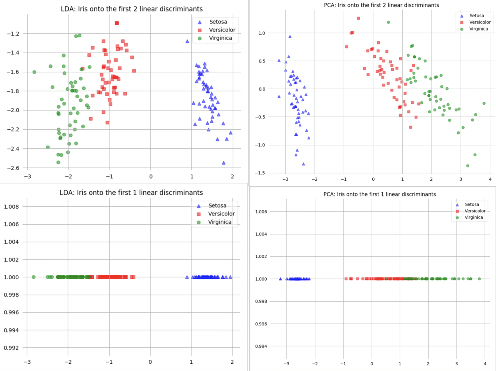

LDA线性判别分析基本原理及Python实现
The basic principle and implementation of LDA
LDA（Linear Discriminant Analysis）线性判别分析，是一种典型的有监督学习分类技术。最常用作模式分类和机器学习应用的预处理步骤中的降维技术。目标是将数据集从高维空间投影到具有良好类别可分性的低维空间，以避免过度拟合（“维数灾难”），在降低计算成本同时，又最大的保持了高维数据的特性。
Introduction
LDA由费舍尔（Ronald A. Fisher）于1936年提出，因此LDA又被称为 Fisher’s Linear Discriminant，最初的LDA算法仅仅是适用于二分类问题，于1948年被 C. R. Rao 泛化为多类别线性判别分析。一般的LDA算法与PCA降维算法不论是算法过程还是最终目的都有着极大的相似性，LDA是在降维后保留最大数据方差的同时，也使得对多个数据类别仍然尽可能可分。

The difference between PCA and LDA
PCA与LDA都是常用的降维线性变换技术。PCA由于不需要数据标签，属于unsupervised learning，其目标是找到最大化数据集方差的方向，即主成分。LDA则是supervised learning，适用于已知类标签的数据集，其目的是最大化各类数据之间协方差。对于已知标签的多类分类任务，LDA似乎优于PCA。但实际情况中，对于各类样本较少的数据集，PCA降维后的数据分类准确性往往优优LDA。故先对数据进行PCA降维到合适维度，再使用LDA进行二次降维是常用的方法。
Mathematical principles
LDA的目的是将高维特征投影到一个低维子空间中同时保持类间的良好可分性和类内的最大化方差。如周志华老师书中图所示

前提条件
假设数据集有N类，第i类数据有\(x_{i}\)个
全局散度矩阵
其中$$是所有示例的均值向量
\(S_{t} = S_{b} + S_{w}\)
\(= \sum_{i=1}^{m}(x-\mu _{i})(x-\mu _{i})^{T}\)
类内散度矩阵
$_{i} $为第i个类的均值向量
\(S_{w} = \sum_{i=1}^{N} \sum_{x\epsilon x_{i}}(x-\mu_{i})(x-\mu_{i})^{T}\)
类间散度矩阵
计算不同类之间的方差
\(S_{b}=S_{t}-S_{w}\)
\(S_{b} = \sum_{i=1}^{N}m_{i}(\mu_{i}-\mu)(\mu_{i}-\mu)^{T}\)
数学推导：

优化目标
tr{·}表示矩阵的迹
$_{w} = $


求解得表达式：
\(S_{b}W = \lambda S_{w} W\)
W 即为\(S_{w}^{-1}S_{b}\) 的N-1个最大广义特征值所对应的特征向量组成的矩阵
NOTE：
在LDA中，线性判别器的数量最多为C-1个，C是数据的类标签数量。因为对于类间散度矩阵Sb的秩最多为C（Sb是由C个矩阵相加得来，具体可以看公式）。又因为前C-1个\(\mu\)可以线性表示第C个$ $，故Sb的秩最多为C-1，即特征向量最多有C-1个。
对于 Iris数据集，C=3，即LDA降维最多只能降维到2维
IRIS Data Analysis
实验数据iris数据集，数据集共3类，维度4维，实验前对数据分布进行粗略了解统计同特征不同类的分布，如图所示：

通过观察这些特征的简单图形表示，我们已经可以看出花瓣长度和宽度可能更适合作为三个花类之间的两个独立的潜在特征。
1 | from matplotlib import pyplot as plt |
LDA Python Implementation
读取 Iris 数据，组合数据为DataFrame格式
1 | import numpy as np |
计算每一类的平均向量Mi，将Mi组合为向量矩阵M
1 | X = self.X |
计算散度矩阵 Sw
1 | X_mean = X.apply(lambda x: x - Mi[x["label"]], axis=1).drop(columns="label") |
计算散度矩阵 Sb
1 | Mi_M = (Mi - M.T).drop(index='label') |
计算\(S_{w}^{-1}S_{b}\)矩阵，并特征值分解
1 | eig_vals, eig_vecs = np.linalg.eig(np.linalg.inv(Sw).dot(Sb)) |
选择前K个最大特征值对应的特征向量组成矩阵W
1 | columns = sorted(val_vecs.columns, reverse=True) |
根据W 计算降维数据(维度不可大于C-1)
1 | if dim>self.class_count: |
对降维数据作图
1 | def plot_lda(self): |

与PCA比较
